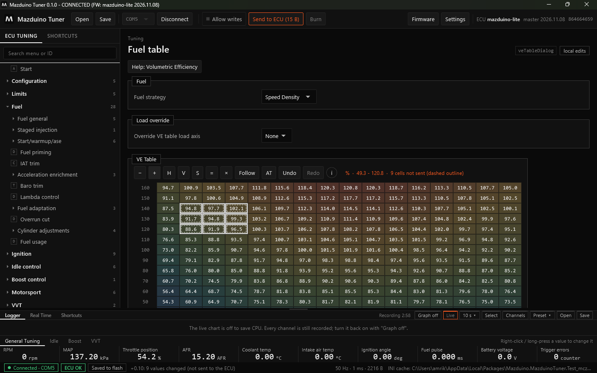
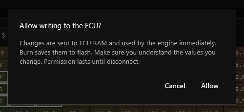
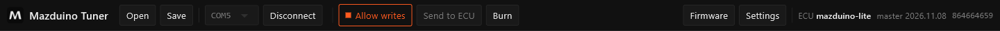
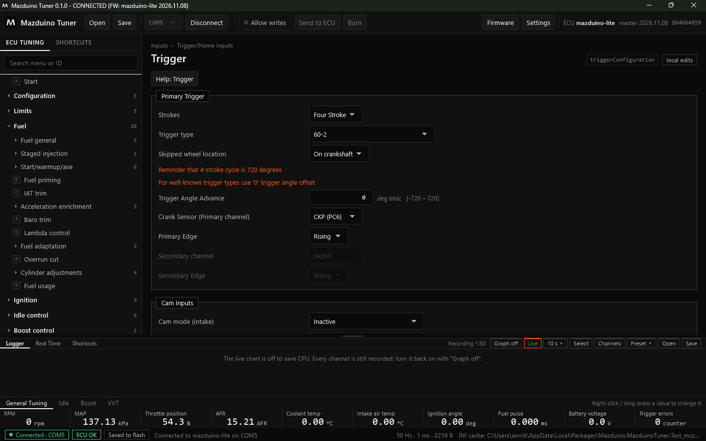
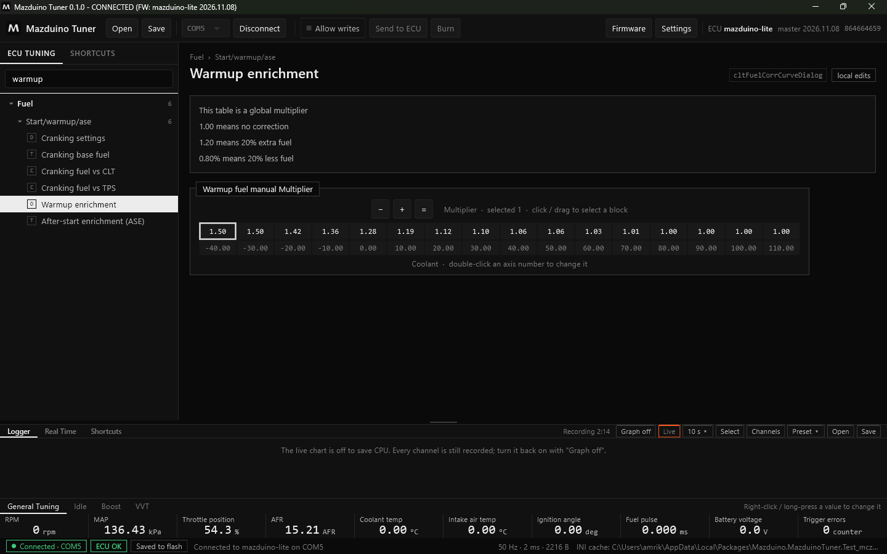

Terakhir diperbarui: 9 November 2026
Mengubah Tune di Mazduino Tuner¶
Halaman ini menjelaskan cara mengubah pengaturan, tabel, dan kurva, lalu mengirim dan menyimpan perubahan ke ECU.
Alur Perubahan: Lokal, RAM ECU, Flash¶
Setiap perubahan melewati tiga tahap:
- Lokal — perubahan baru ada di aplikasi. Sel yang berubah diberi garis putus-putus, dan tertulis jumlah sel yang belum dikirim.
- RAM ECU — perubahan dikirim ke ECU dan langsung dipakai mesin, tetapi hilang jika ECU mati.
- Flash — perubahan disimpan permanen dengan Burn.
Secara default aplikasi tidak boleh menulis ke ECU. Selama itu, semua edit hanya lokal dan aman untuk dicoba.

Pada contoh di atas sembilan sel dinaikkan. Sel-selnya bergaris putus-putus, tertulis 9 cells not sent, dan tombol Send to ECU (15 B) menyala. Klik Undo (Ctrl+Z) untuk membatalkan.
Allow writes¶
Klik Allow writes di toolbar untuk mengizinkan aplikasi menulis ke ECU. Aplikasi meminta konfirmasi:

Setelah diizinkan, tombol berwarna oranye dan label halaman berubah menjadi writes allowed:

Selama Allow writes aktif:
- Setiap edit langsung dikirim ke RAM ECU dan langsung dipakai mesin.
- Send to ECU mengirim perubahan yang tertunda (misalnya yang dibuat sebelum Allow writes dinyalakan).
- Burn (Ctrl+B) menyimpan ke flash. Status bar menampilkan Saved to flash jika semua sudah tersimpan.
Izin ini hanya berlaku sampai disconnect. Klik Allow writes lagi untuk mematikannya.
Perhatikan kondisi mesin
Dengan Allow writes aktif, perubahan langsung dipakai mesin. Pastikan Anda memahami nilai yang diubah, terutama saat mesin menyala.
Halaman Pengaturan¶
Halaman pengaturan (ikon D di menu) berisi kolom isian, pilihan, dan catatan dari firmware. Contoh halaman Trigger (tombol F11):

- Kolom angka menampilkan satuan dan batas nilai, misalnya
deg btdc [-720 – 720]. - Teks oranye adalah catatan penting dari firmware.
- Kolom abu-abu sedang tidak berlaku untuk pengaturan saat ini (misalnya Secondary channel saat tidak ada sensor kedua).
- Tombol Help membuka penjelasan halaman.
Tabel¶
Contoh halaman Fuel table (F5) dengan VE Table:

Sumbu X di atas (biasanya RPM) dan sumbu Y di kiri (beban: MAP, TPS, dan lain-lain, sesuai mode). Warna sel menunjukkan besar kecilnya nilai.
Memilih sel: klik sel, atau klik lalu tarik untuk memilih blok.
| Tombol | Keyboard | Fungsi |
|---|---|---|
| − / + | Q / W (atau − / +) | Turunkan / naikkan sel terpilih satu langkah. Dengan Shift: 10 langkah. |
| H / V | H / V | Interpolasi horizontal / vertikal di antara sel tepi |
| S | S | Smooth (haluskan) blok terpilih |
| = | = / Enter | Isi semua sel terpilih dengan satu nilai |
| × | M | Kalikan sel terpilih (misalnya *1.05 = +5%) |
| angka | ketik angka | Ketik nilai untuk sel terpilih |
| Follow | Space | Pilihan mengikuti sel yang sedang dipakai mesin (RPM × beban) |
| AT | Panel VE autotune | |
| Undo / Redo | Ctrl+Z / Ctrl+Y | Batalkan / ulangi perubahan |
| i | Tampilkan ringkasan tombol dan shortcut tabel |
Saat ECU terhubung, sel yang sedang dipakai mesin ditandai di tabel.
VE Autotune¶
Tombol AT di tabel VE membuka panel autotune. Panel ini mengusulkan koreksi VE dari lambda terukur dibanding target, sel per sel. Ctrl+T menerapkan koreksi pada sel di posisi mesin. Jika Allow writes mati, koreksi hanya mengubah tune lokal dan bisa dikirim ke ECU nanti. Saat autotune berjalan, status bar menampilkan penandanya.
Kurva¶
Kurva (ikon C di menu) berupa satu baris nilai dengan sumbunya di bawah. Contoh Warmup enrichment:

- Klik atau tarik untuk memilih titik, lalu pakai −, +, atau = seperti pada tabel.
- Klik dua kali angka sumbu untuk mengubah titik sumbu.
Shortcut Halaman¶
| Tombol (bawaan) | Halaman |
|---|---|
| F5 | Fuel table (VE) |
| F6 | Tabel target AFR / Lambda |
| F7 | Ignition table |
| F11 | Trigger |
Tombol F2 sampai F12 bisa diberikan ke halaman mana pun lewat klik kanan di menu. Lihat Klik Kanan pada Halaman. Daftar lengkap ada di tab Shortcuts di panel bawah (Logger dan Real Time).